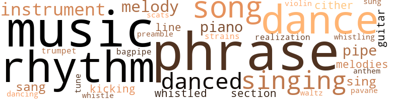
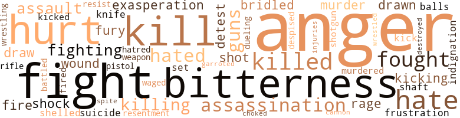

Curling, by Boles, Robert E. (1968)
137 music-related terms matched in this text.
Most frequent terms in this topic: music (15); phrase (15); dance (12); rhythm (10); singing (7)
bagpipe.n.01
Definition: a tubular wind instrument; the player blows air into a bag and squeezes it out through the drone
| word | sentence |
|---|---|
| bagpipe | I was owned for , perhaps , six seconds by a nostalgia , six seconds , each a side forming a cube already containing twenty dozen hours of bagpipe melodies , winter shores of white-yellow rows of gleaming shells , women 's arms in gestures at once banal and exquisite , tenderness in the faces of drunken friends , the shifts of moments within moments from beauty to ugliness , and the other way around , circles without centers . |
cornet.n.01
Definition: a brass musical instrument with a brilliant tone; has a narrow tube and a flared bell and is played by means of valves
| word | sentence |
|---|---|
| trumpet | T wo footsteps more and I felt the sun 's charge wear off while for a while my eyes saw the ghosted bell of a trumpet floating five or six feet in front of me , the sun , floating like one of Chagall 's Jews , and then the objects became clear , the telephone table 's curved legs with claws gripping glass orbs which rested on the brightly polished floor . |
dance.n.01
Definition: an artistic form of nonverbal communication
| word | sentence |
|---|---|
| dance | The fresh , the lilting African dance , so simple , so much of what a dance should be . |
| dance | The fresh , the lilting African dance , so simple , so much of what a dance should be . |
| dance | And soon all that remained of us danced that dance with jackets off and ties untied and suspenders slackened . |
| dance | Late in the evening we danced a communal dance that was absent of women because gowns were too awkward for that labor , and I did sweat as did the others and the sweat was wiped from forehead with napkin and absorbed by cloth as enthusiasm waged battle with muscle . |
| dance | When could I run through a field , kicking hard at grass , when could I leap and catch a handful of moist leaves , when could I shirtless dance alone to the music of waves , when could I run out on a smooth sandflat at a low tide in an attempt to be at the very edge of the continent - alone ? |
| dance | It was a time for dancing an unfamiliar dance . |
| dance | The music had been a pavane , rigidly measured , and the dance we executed had been taught to us by a guest , an Italian from Turin and Rome . |
| dance | The dance exhilarated an inch away from boredom . |
| dance | Like that dance . |
| dance | The girl sitting across from us at the same table , the girl who was sweating after the dance , the girl who was brown and Portuguese and Indian and Negro and White and Hessian was young and just learning how to manipulate the mystery of her sex . |
dance.v.02
Definition: move in a pattern; usually to musical accompaniment; do or perform a dance
| word | sentence |
|---|---|
| danced | Late in the evening we danced a communal dance that was absent of women because gowns were too awkward for that labor , and I did sweat as did the others and the sweat was wiped from forehead with napkin and absorbed by cloth as enthusiasm waged battle with muscle . |
| dancing | It was a time for dancing an unfamiliar dance . |
dance.v.03
Definition: skip, leap, or move up and down or sideways
| word | sentence |
|---|---|
| danced | And he danced around the park , did somersaults and stood on his hands for fifteen seconds . |
| dance | As I shaved and dressed in the eady evening I found my muscles readied to dance to a music and my thoughts free of personal history . |
| danced | I danced with Anne . |
| danced | And soon all that remained of us danced that dance with jackets off and ties untied and suspenders slackened . |
| danced | We danced strenuously until we exhausted the deepest muscle fiber and felt muscle tearing at bone . |
| danced | I could have slept by it , danced to it , dreamed to it dreams I wanted , or whatever . |
| dance | I wanted the early morning silent streets to resound and wanted snow to muffle the primordial anger , the anger at the question we ask from time to time and then forget while we dance and work and look and feel . |
guitar.n.01
Definition: a stringed instrument usually having six strings; played by strumming or plucking
| word | sentence |
|---|---|
| guitar | America is the popular song of the day , is jazz , is the hippest movie , a motorcycle , a cute chick , an electric guitar , a satellite , a movie star , is the it of what is , is marijuana and suburbia . |
| guitar | It was Bach on a guitar , or one of Villa-Lobos 's Bachianas Brasileiras pieces . |
hymn.n.01
Definition: a song of praise (to God or to a saint or to a nation)
| word | sentence |
|---|---|
| anthem | Waking on the weekdays I hear the children singing the national anthem . |
kick.v.04
Definition: kick a leg up
| word | sentence |
|---|---|
| kicking | Then he ran - already at full speed through the field of tall grass , almost tripping , kicking into it , hard , as he ran so that he would n't . |
| kicking | When could I run through a field , kicking hard at grass , when could I leap and catch a handful of moist leaves , when could I shirtless dance alone to the music of waves , when could I run out on a smooth sandflat at a low tide in an attempt to be at the very edge of the continent - alone ? |
music.n.01
Definition: an artistic form of auditory communication incorporating instrumental or vocal tones in a structured and continuous manner
| word | sentence |
|---|---|
| music | I played the MJQ with Gunther Schuller , the Third Stream , music that reflected what I felt . |
| music | For the most part , he let it , like recorded music , soothe , then soften , then fire his imagination , diffuse his discontent , make contentment mild , and make the sadness and anger bland . |
| Music | Music like Concerto in G , Maurice Ravel . |
| music | For the most part , I let it , like music , soothe , then soften , then fire my imagination , diffuse my discon - tent , make contentment mellow and mild , and make bland the sadness that was so well mixed with anger . |
| music | As I shaved and dressed in the eady evening I found my muscles readied to dance to a music and my thoughts free of personal history . |
| music | The music system was on . |
| music | " We 'll have to suffer recorded music tonight . |
| music | When could I run through a field , kicking hard at grass , when could I leap and catch a handful of moist leaves , when could I shirtless dance alone to the music of waves , when could I run out on a smooth sandflat at a low tide in an attempt to be at the very edge of the continent - alone ? |
| music | The first trip , the plates and glasses , the second , the salt and wine and butter , then we would eat by the light of a sun setting on a city landscape to the music of voices somewhere below made incoherent by the distance , the sounds of cars and trucks and a fight in an alley . |
| music | The music was perfect . |
| music | The music we were listening to was amazingly beautiful and would have commanded attention anywhere . |
| music | It was not the music they listened to but the individual notes , individual notes like jewels in an imperfect window . |
| music | But I played that music in my head in that room . |
| music | I thought of going to a church that morning , a Catholic or Episcopal one , so that I could hear the music , so that I could hear an Agnus Dei at dawn , some music simple as a sunrise , a Kyrie Eleison delicate in melody as the color of a sunrise , confident as man 's belief in a sunrise . |
| music | I thought of going to a church that morning , a Catholic or Episcopal one , so that I could hear the music , so that I could hear an Agnus Dei at dawn , some music simple as a sunrise , a Kyrie Eleison delicate in melody as the color of a sunrise , confident as man 's belief in a sunrise . |
| music | The music had been a pavane , rigidly measured , and the dance we executed had been taught to us by a guest , an Italian from Turin and Rome . |
musical_instrument.n.01
Definition: any of various devices or contrivances that can be used to produce musical tones or sounds
| word | sentence |
|---|---|
| instruments | One , two , three , four , numbers , words , bleeding hearts , bell-shaped instruments , Stundenglas doubled , halved . |
| instruments | They are very quiet , and from time to time they watch the men playing the instruments . |
| instrument | It is from habit , for I notice the clean lines of the precision-made instrument , where the crystal meets the metal , and not the time . |
| instrument | Now that it was nearer summer , the night became my instrument . |
| instruments | At between ninety and a hundred miles per hour , driving is effortless as if the car moves not on a road but on a membrane stretched from point to point by surgical instruments . |
| instrument | My car had been an instrument of my needs . |
pavane.n.01
Definition: music composed for dancing the pavane
| word | sentence |
|---|---|
| pavane | The music had been a pavane , rigidly measured , and the dance we executed had been taught to us by a guest , an Italian from Turin and Rome . |
phrase.n.02
Definition: a short musical passage
| word | sentence |
|---|---|
| phrase | Then in trying to remember something , a detail , a phrase in a letter , I resolved to read the letters written and received during the summer . |
| phrase | The phrase reverberated in me to the point where I felt nothing but the timbrous waves of a statement . |
| phrase | It was not bitterness or disappointment which led me through those thoughts once again , but a phrase , lost in a letter and in a summer . |
| phrase | So L confides to Q a phrase or two of what is known . |
| phrase | Perplexed then to find an answer , they would in a day or two toss the phrase at a friend in imitation of her manner . |
| phrase | Each was as a painting , a piece of good work , to an artist , or a phrase of consummate beauty to a poet . |
| phrase | I tried to phrase words , to make sentences that would clear what he felt . |
| phrases | And I am neglecting the faces and eyes that met mine and revealed unexpected phrases shared in glances . |
| phrase | And he greeted everyone with the phrase , " Say , dad . " |
| phrase | ( That phrase made clear to me much later ) Had I been able to sing or write a poem , I would have . |
| phrases | Between the words and phrases which were formed of years of habit , her lips moved with the surety of men 's fingers tying shoelaces . |
| phrase | Strange phrase ; what does it mean ? |
| phrase | Roger sat within himself , watched , stared for a few seconds at the design of the parquet floor near the wall , and catlike , sprang , but with a phrase that brought things to an acute sense of corporeality . |
| phrase | The phrase rests supraliminally , because , temporarily , I could not find a way to understand it . |
| phrases | I recalled odors from the past - and phrases . |
| phrase | but the memory stopped there , on the edge of a phrase or a meaning , lips parted as they were about to speak a trivial word that would have acted as a prism . |
| phrase | The light was quickly gone and though the graduations were imperceptible to the eye from second to second , were not from phrase to phrase of conversation or experience of this degree noted by the nerve ends held like crystals on a film screen on skin . |
| phrase | The light was quickly gone and though the graduations were imperceptible to the eye from second to second , were not from phrase to phrase of conversation or experience of this degree noted by the nerve ends held like crystals on a film screen on skin . |
piano.n.01
Definition: a keyboard instrument that is played by depressing keys that cause hammers to strike tuned strings and produce sounds
| word | sentence |
|---|---|
| piano | I walked , as parachutist , up the driveway and curling steps , pausing on one nearly triangular after i sonic boom , muffled by snow , surprised my muscles into breaking the quickening rhythm I was aware of , then continued , walked listening to the , not distant , but muted and succulent piano notes and edible pitches of laughter . |
| piano | Chuck and Robin own two well-trained Dalmatians who assumed various postures on the floor and who were given drinks , unfinished ones left by guests on the fireplace mantel , the piano , the floor , and who got quite drunk and even staggered , much to everyone 's amusement , when they walked to another room . |
| piano | A cigarette had been left burning on the edge of the piano and had burned off the finish and into the wood . |
| piano | How perfect a piano recital would have been there . |
pipe.n.04
Definition: a tubular wind instrument
| word | sentence |
|---|---|
| pipes | " A man without a son , " pause , " is an anchor without a chain , " pause , " I 'd rather have a clanking chain , " pause in which he added , " Like what 's his name who haunted Scrooge , " then continued , " than all the pipes in France . " |
| pipe | I smoke until my lungs ache , then cut down a while , take up a pipe . |
| pipe | " Down the wrong way , the wrong pipe . " |
| pipe | The things that I had seen every day were haunted with a peculiar grace in the sunlight powdered with filaments of dust , coils that seemed to be shaken from their moorings within the vacuum of a light bulb , the accumulated marks on furniture , the dark woods , shades never seen elsewhere so slightly different , darker or lighter , polished with the oil of certain hands as inconspicuously as a pipe bowl 's polished with the oil from the creases of the nostrils , the few paintings with cracks not visible when the sun shone obliquely and vice versa , the carved banisters , the imperfection of angle in this floor , the velvet-brocaded chairs worn almost white at back and buttocks and thighs , the scattered magazines . |
preamble.n.01
Definition: a preliminary introduction to a statute or constitution (usually explaining its purpose)
| word | sentence |
|---|---|
| preamble | I suppose that this indulgence of mine , simple , sentimental , disorganized and ugly , was merely preamble to the party I attended in the evening . |
realization.n.03
Definition: a musical composition that has been completed or enriched by someone other than the composer
| word | sentence |
|---|---|
| realization | That I can dislike those I love , who love me , that those women I desire to love , those men I want to be are unattainable , always , that I have spent the last two years with the hope of finding something more than what is offered - that hope , fading , my acceptance of this and that , my realization that I am being slowly beaten . . . But I did n't want to see that much . |
rhythm.n.04
Definition: the arrangement of spoken words alternating stressed and unstressed elements
| word | sentence |
|---|---|
| rhythms | I had once been in love with the building and the rhythms of its structure . |
| rhythms | The rhythms had not changed , but were muted now . |
| rhythm | The rhythm of walking had been comforting . |
| rhythm | Logic is rhythm also . |
| rhythm | It was a strange rhythm and I watched it until she was out of sight . |
| rhythms | Songs and rhythms began to rush through my head . |
| rhythm | I walked , as parachutist , up the driveway and curling steps , pausing on one nearly triangular after i sonic boom , muffled by snow , surprised my muscles into breaking the quickening rhythm I was aware of , then continued , walked listening to the , not distant , but muted and succulent piano notes and edible pitches of laughter . |
| rhythm | She changed the subject without breaking the rhythm of her conversation . |
| rhythm | One would guess , the eyes , eyes that change , but bow , from exuberance to a delicate despair without forsaking a look of the " I. " One would guess the mouth that holds seasons in abeyance , lips that move with the rhythm of thoughts , parting now , hidden , then , brought in , rolled against the teeth with jaws slightly opened , changing the shape of the face slightly , extending a line . |
| rhythm | Suddenly , it seemed , the rhythm I had missed all night was there and mine . |
| rhythm | Again I was falling asleep , into a sinking rhythm of sleep and sailing and dreaming and . . . the light changed . |
| rhythm | Time ticked to the rhythm of windshield wipers without variation . |
| rhythm | The rhythm changed to Bossa Nova . |
| Rhythms | Rhythms of snow and winds repeating them selves , mixing , edited finally in one brain , in summer , a second of memory . |
scat.n.01
Definition: singing jazz; the singer substitutes nonsense syllables for the words of the song and tries to sound like a musical instrument
| word | sentence |
|---|---|
| scats | I was in a part of town I had never been in before , a sprawling neighborhood of wood-frame , two - and three-story houses , porches with sleds and rusted bicycles , swings with snow in the scats . |
section.n.01
Definition: a self-contained part of a larger composition (written or musical)
| word | sentence |
|---|---|
| section | Small adds in the New York Times Magazine section , etc. " " I have always had the feeling that Casals was rather standoffish . " |
| section | I preferred to walk and walked through the Negro section , Roxbury . |
sing.v.02
Definition: produce tones with the voice
| word | sentence |
|---|---|
| sing | He then cleared his throat and began to sing . |
| sing | I remem - bcr that quite well , and though I can not remember what the song was , I remember thinking how beautiful it was for men to sing for no other purpose than to hear voices in harmony , words and melody i i a harmony that touches , Somehow , what words otherwise can not touch . |
| sing | ( That phrase made clear to me much later ) Had I been able to sing or write a poem , I would have . |
| sung | It is true of me and always has been that I seek the lone - liest spot , that I listen to the sounds of voices more often than the words spoken or sung . |
| singing | They were singing below me . |
| sang | Other birds sang . |
| sang | I knew that the inhabitants of that wasteland of houses sang the same popular songs , had taken the same oaths , had pledged too well the same allegiance ... I do n't know . |
| singing | Waking on the weekdays I hear the children singing the national anthem . |
| singing | A female singer with a voice of fog was singing " Miss Otis Regrets " in a room in which corners had vanished because of dim light carefully controlled and cigarette smoke . |
| singing | She is singing to no one . |
| sang | Me was young , handsome , cocky , happy , proud , sad , all of those things at once , an animal of intelligence , and he sang to himself and to the street . |
singing.n.01
Definition: the act of singing vocal music
| word | sentence |
|---|---|
| singing | Chelsea ( begins singing . |
| singing | Terzett , double-decker buses , stylish underwear , Whyte and MacKay 's Scotch , racing sloop hulls , plaid Irish sports car caps , matchbooks , Tanglewood B S.O. , Coral Sands Hotel , Fort Lauderdale , the Parker House , Boston and ticket stubs , The Blacks at St. Marks Theatre in the East Village , New York , or A Thousand Clowns or a Brendan Behan thing , the Quare Fellow , or of concerts , tenors and sopranos , countertenors and contralto ; holding scores in outstretched arms and bending at the waist while singing . |
| singing | She could be in a closed room singing to an imaginary audience , gesturing carelessly . |
song.n.01
Definition: a short musical composition with words
| word | sentence |
|---|---|
| song | " I 've written a drinking song , " he said . |
| song | The idiotic song he had written was better than I thought . |
| song | America is the popular song of the day , is jazz , is the hippest movie , a motorcycle , a cute chick , an electric guitar , a satellite , a movie star , is the it of what is , is marijuana and suburbia . |
| Songs | Songs and rhythms began to rush through my head . |
| song | I had just been listening to a song . |
| song | I remem - bcr that quite well , and though I can not remember what the song was , I remember thinking how beautiful it was for men to sing for no other purpose than to hear voices in harmony , words and melody i i a harmony that touches , Somehow , what words otherwise can not touch . |
| song | And her father was a German poem and her mother a French song about walking along the quays of the Seine . " |
| songs | I knew that the inhabitants of that wasteland of houses sang the same popular songs , had taken the same oaths , had pledged too well the same allegiance ... I do n't know . |
| Songs | Songs intrigue when melodies rest beyond the tongue . |
| song | The vocalist had finished the song . |
tune.n.01
Definition: a succession of notes forming a distinctive sequence
| word | sentence |
|---|---|
| tune | " A man without religion , " a pause in which he commented thoughtfully , " That can mean philosophy too , " then continued , " is a pump that wo n't pump water , " pause , " I 'd rather have a working pump , " pause , " than eat , " here the tune changed so that he could end dramatically , " a New England , " louder and reaching a high note , " boiled - dinner ! " |
| melody | And there was a melody in my head . |
| strains | Things seem to have shifted as if I , a part of myself , and the world were operating at different tempos , were realizing different and separate strains of time . |
| melodies | I was owned for , perhaps , six seconds by a nostalgia , six seconds , each a side forming a cube already containing twenty dozen hours of bagpipe melodies , winter shores of white-yellow rows of gleaming shells , women 's arms in gestures at once banal and exquisite , tenderness in the faces of drunken friends , the shifts of moments within moments from beauty to ugliness , and the other way around , circles without centers . |
| line | One would guess , the eyes , eyes that change , but bow , from exuberance to a delicate despair without forsaking a look of the " I. " One would guess the mouth that holds seasons in abeyance , lips that move with the rhythm of thoughts , parting now , hidden , then , brought in , rolled against the teeth with jaws slightly opened , changing the shape of the face slightly , extending a line . |
| melody | I remem - bcr that quite well , and though I can not remember what the song was , I remember thinking how beautiful it was for men to sing for no other purpose than to hear voices in harmony , words and melody i i a harmony that touches , Somehow , what words otherwise can not touch . |
| line | The cars were soon all in line . |
| melody | I thought of going to a church that morning , a Catholic or Episcopal one , so that I could hear the music , so that I could hear an Agnus Dei at dawn , some music simple as a sunrise , a Kyrie Eleison delicate in melody as the color of a sunrise , confident as man 's belief in a sunrise . |
| melodies | Songs intrigue when melodies rest beyond the tongue . |
| melody | Antimotivational force - lack of sleep , powder , a new cocoon being spun , the melody penetrates and there is mobility again within this strata of concentric globes . |
| melody | There is a melody in my head . |
violin.n.01
Definition: bowed stringed instrument that is the highest member of the violin family; this instrument has four strings and a hollow body and an unfretted fingerboard and is played with a bow
| word | sentence |
|---|---|
| violin | A young fellow on the platform has his violin bow ready to strike again . ) |
waltz.n.03
Definition: a ballroom dance in triple time with a strong accent on the first beat
| word | sentence |
|---|---|
| waltz | The streets were beautiful enough to waltz in . |
whistle.n.01
Definition: the sound made by something moving rapidly or by steam coming out of a small aperture
| word | sentence |
|---|---|
| whistling | There was the whistling of wind at cracks and the soft crackling of plastic being blown in and then sucked out like spinnakers . |
whistle.v.01
Definition: make whistling sounds
| word | sentence |
|---|---|
| whistled | Cade whistled a passage from a Bach invention . |
| whistled | I whistled and walked , a dog would occasionally bark , a dog unseen . |
| whistle | I begin to whistle , half asleep , but it sounds so loud and coarse , that I quit it . |
zither.n.01
Definition: a musical stringed instrument with strings stretched over a flat sounding board; it is laid flat and played with a plectrum and with fingers
| word | sentence |
|---|---|
| cither | Almost everyone had taken a place standing cither behind the couch or in front of the fireplace or behind the chair of someone seated , someone with cards in hand . |
| cither | Chelsea : I do n't suppose I 'll ever get over that cither . |
148 violence-related terms matched in this text.
Most frequent terms in this topic: anger (25); fight (8); hate (7); hurt (7); kill (7)
aggravation.n.01
Definition: an exasperated feeling of annoyance
| word | sentence |
|---|---|
| exasperation | He had counted them once in a fit of exasperation . |
| exasperation | He had counted them once in a fit of exasperation . |
anger.n.01
Definition: a strong emotion; a feeling that is oriented toward some real or supposed grievance
| word | sentence |
|---|---|
| anger | For the most part , he let it , like recorded music , soothe , then soften , then fire his imagination , diffuse his discontent , make contentment mild , and make the sadness and anger bland . |
| anger | For an instant , I had been no longer of flesh and blood , but of grief , the chrysalis of action and anger , the chrysalis of . . . The closing of a door . |
| anger | Her expression of gravity , deeper than anger or hysteria , and immutable , was reminiscent of a past that he was beyond . |
| anger | I spent the rest of the day in my room until his anger subsided ... . |
| anger | Then the scattered sound of trucks , echoing at a distance , not loud enough to cover the sound of my footsteps . . . . ... There were a great number of days in which I waited in my room for his anger to subside . |
| anger | For the most part , I let it , like music , soothe , then soften , then fire my imagination , diffuse my discon - tent , make contentment mellow and mild , and make bland the sadness that was so well mixed with anger . |
| anger | It caused a cord of anger to ripple within me . |
| anger | There is dignity , I said , without moving my lips or uttering a sound , and I felt that all but him would hear it , as if I had shouted it in anger with a voice magnified a hundred times . |
| anger | A second before that , I had been nursing a type of anger ... in readiness for something . |
| anger | I was beginning an anger . |
| anger | It took a motion picture frame for her face to register surprise , a second frame to understand the situation , a third to anger and a fourth to begin control . |
| anger | My anger and my bitterness were nearly unbearable . |
| anger | My anger caused me to hyperventilate . |
| anger | The voice was deep in anger . |
| anger | I wanted to work off anger or grief , or both . |
| anger | I wanted the early morning silent streets to resound and wanted snow to muffle the primordial anger , the anger at the question we ask from time to time and then forget while we dance and work and look and feel . |
| anger | I wanted the early morning silent streets to resound and wanted snow to muffle the primordial anger , the anger at the question we ask from time to time and then forget while we dance and work and look and feel . |
| anger | My anger becomes sullen , my joy becomes something briefly bursting , my tenderness becomes as taut as notes in a Bach Invention and the " I " of me becomes a shadow of a silence , indistinct hovering like one of Chagall 's Jews or like the extra tread one seeks when climbing an unfamiliar flight of stairs in the dark . |
| anger | I would buoy myself with a feeble anger for a moment , and then , another game . |
| anger | And along with it , a slight anger at myself for having allowed the circumstance . |
| anger | A man could exercise it in anger or a woman at a cocktail party could execute it with a sense of jeunesse doree . ) |
| anger | Her voice was full with restrained anger but not overly loud . |
| anger | In continued anger , she shook the boy . |
| anger | Delayed anger struck me . |
| anger | I beat him until all of my anger had vanished and until he was silent . |
| angers | But my angers , my rebellions , my dreams were cut not from the hero I wanted to be but from the hero I would never allow myself to be . |
battle.v.01
Definition: battle or contend against in or as if in a battle
| word | sentence |
|---|---|
| battled | I sympathized , frowned when frowning was appropriate , battled a point or two and found that I won too easily - no one was willing to really fight . |
blast.v.03
Definition: use explosives on
| word | sentence |
|---|---|
| shelled | In my car I am a shelled crab - better , an armadillo in this botanist 's nightmare , and it is all quite normal . |
bridle.v.01
Definition: anger or take offense
| word | sentence |
|---|---|
| bridled | It was half an hour before I had the horses bridled and saddled . |
| bridled | I bridled , saddled and mounted him and rode down the steep slope at the edge of the garage to the road . |
cannon.n.04
Definition: heavy automatic gun fired from an airplane
| word | sentence |
|---|---|
| cannon | Had I realized that it was n't - that , more than liking or taste , I knew too much to ever become a part of the alternative I had imaginatively kept alive , of a life as simple as it had been in the courtroom , the rural New England courtroom with the public library directly overhead , with a band box and baseball field across the road , marked on the edge by a cannon from a war never asked about ? |
character_assassination.n.01
Definition: an attack intended to ruin someone's reputation
| word | sentence |
|---|---|
| assassination | It had erupted the previous year with the assassination , with murders of civil rights workers by men , whom , if brought to trial at all , would be acquitted . |
| assassination | Soon some began to break away in order to ) resume conversations about Japanese flower arranging , mushroom hunting , business , sports car driving , wrestling holds , the assassination and whatever . |
| assassination | I hesitate to say , " such as an assassination , " but it was that . |
contemn.v.01
Definition: look down on with disdain
| word | sentence |
|---|---|
| despised | That she despised having to ask , I knew . |
destroy.v.04
Definition: put (an animal) to death
| word | sentence |
|---|---|
| destroyed | The trail bike I had destroyed on a rock . |
draw.v.23
Definition: pull (a person) apart with four horses tied to his extremities, so as to execute him
| word | sentence |
|---|---|
| draw | She gathers that he is one who does not like to draw attention . |
| drawn | But I stopped for fear of being drawn into a conversation I have had too many times before to find interesting . |
| draw | If one were to chart the glances that cross a room during a party , if one were to draw smiles and laughter , embarrassments and the rest , as patterns , one would end a beauty that is the madness of congregation 's highest forms . |
| drawn | He is lying naked in bed with a sheet drawn up to his chest . |
duel.v.01
Definition: fight a duel, as over one's honor or a woman
| word | sentence |
|---|---|
| dueling | A silver dueling pistol . |
engage.v.07
Definition: carry on (wars, battles, or campaigns)
| word | sentence |
|---|---|
| waged | Late in the evening we danced a communal dance that was absent of women because gowns were too awkward for that labor , and I did sweat as did the others and the sweat was wiped from forehead with napkin and absorbed by cloth as enthusiasm waged battle with muscle . |
fight.n.05
Definition: a boxing or wrestling match
| word | sentence |
|---|---|
| Fight | He read one that read starkly , " Fight Hypokinesia , " then felt himself being regarded by another passenger , one standing and too well dressed to be riding on the subway . |
| fight | I wanted a mythological demon to fight , win , or lose or draw , so that I could put up a heroic fight . |
| fight | I watched a small boy want a snowball fight . |
| fight | The first trip , the plates and glasses , the second , the salt and wine and butter , then we would eat by the light of a sun setting on a city landscape to the music of voices somewhere below made incoherent by the distance , the sounds of cars and trucks and a fight in an alley . |
| fights | One fights to be polite , to have the opportunity to shift and balance , sort and sift the ideas and emotions . |
fight.v.02
Definition: fight against or resist strongly
| word | sentence |
|---|---|
| fight | I wanted a mythological demon to fight , win , or lose or draw , so that I could put up a heroic fight . |
| fight | I do n't know who to fight ? |
| fought | I fought an urge to wear a suit , and ended by wearing blue jeans , a shirt and tie - we eat breakfast . |
| fought | The I was not I but we or they or you and the confess was not confess but forgive , perhaps , or heal , or sweat - the Italian , the one from Turin met some time ago , relating one of his war stories - running from Yugoslavs after finding his companion , a young officer like himself just out of the Royal Military Academy leaning against a tree , dead , a bullet hole in the center of his forehead - running until the sweat was half blood , blood sweat from pores of skin , internal wounds of battles fought , not external at all . |
| fighting | He was fighting a mild bout of malaria . |
| fight | I sympathized , frowned when frowning was appropriate , battled a point or two and found that I won too easily - no one was willing to really fight . |
| fight | He turns , ready to fight . |
| fought | I fought it off . |
| fighting | I did not know what was said , but it seemed to me that he was fighting back tears . |
| fighting | His face was bloodied and blood spattered the snow we had been fighting on . |
| fought | " And you fought him ? " |
| fight | Morning coming slowly is pleasant , in the winter with the windows gray with frost , the rose light , eyes that do n't fight reception , the brain buzzing with lack of sleep . |
frustration.n.03
Definition: a feeling of annoyance at being hindered or criticized
| word | sentence |
|---|---|
| frustration | My frustration mounted and then broke apart . |
fury.n.01
Definition: a feeling of intense anger
| word | sentence |
|---|---|
| rage | I had never heard a rapid patter of machine guns or sweated in a swamp foxhole , strolled across a field of human carrion that would make my dormant rage come alive . |
| fury | For a moment , it was as if time and place were halves of the same dichotomy , one that was palpable while viewing the fury of snow that was only falling of its own weight , knocking against the changing corners of air . |
| fury | My kisses , my tongue , moistening the thighs , my tasting the bitter taste of the pleasure I would receive , my holding , my finding a sensitive muscle , my easing my sex into the soft , the warmth , my waiting for her to relax , and then a gentle push , another in a second or two , again and again until lodged and then , the motion , the deep breathing , the breath flooding , caught on open chords , the holding tighter , the deeper craving of the mouth , the increasing to fury and rage from want when she , too , began to move her hips and legs and find a pleasure . |
| rage | My kisses , my tongue , moistening the thighs , my tasting the bitter taste of the pleasure I would receive , my holding , my finding a sensitive muscle , my easing my sex into the soft , the warmth , my waiting for her to relax , and then a gentle push , another in a second or two , again and again until lodged and then , the motion , the deep breathing , the breath flooding , caught on open chords , the holding tighter , the deeper craving of the mouth , the increasing to fury and rage from want when she , too , began to move her hips and legs and find a pleasure . |
gag.v.06
Definition: cause to retch or choke
| word | sentence |
|---|---|
| choked | I had seen none of it before - not looking - and would have , if possible , hired a poet to see and transcribe the lines , the sheens that moved me curiously , that I felt in my breast , that choked my breath . |
garrote.v.01
Definition: strangle with an iron collar
| word | sentence |
|---|---|
| garroted | For a moment I was caught up , garroted by invisible memories of past moments similar to these when external forces , words not understood , the timbre of voices in darkness reached deep into me , into some other past where they were understood in a language I could not . |
gun.n.01
Definition: a weapon that discharges a missile at high velocity (especially from a metal tube or barrel)
| word | sentence |
|---|---|
| guns | I had never heard a rapid patter of machine guns or sweated in a swamp foxhole , strolled across a field of human carrion that would make my dormant rage come alive . |
| guns | Most of them with guns against their thighs in ugly leather holsters . |
| guns | There were too many people in the courtroom for the guards to draw their guns . |
hate.n.01
Definition: the emotion of intense dislike; a feeling of dislike so strong that it demands action
| word | sentence |
|---|---|
| hatred | Looking at my fingers : Thumb , left hand ; my hatred of winter , my fear of being cold . |
| hate | It was instant hate , brother ! |
hate.v.01
Definition: dislike intensely; feel antipathy or aversion towards
| word | sentence |
|---|---|
| hated | I hated Negroes , loved them , wanted to be a part of their community , did not , race had nothing to do with it . |
| hated | He loved some people easily and fully and hated others just as easily and just as fully . |
| hate | You work in an office you hate when you could be living off the fat of the land . " |
| hated | I had first thought him a bigot , that he hated Japanese when no Japanese were near , Jews when no Jews were near , Negroes , undoubtedly , when no Negroes were near - and championed Japanese for their courage when facing them , Jews for their persistence and Negroes for their recognition of justice as well as temperance . |
| detest | I detest being drunk , walking a little too stiffly , speaking a little too clearly in order to assure the proper enunciation , having vision dimmed . |
| detest | " If you were a woman , women would detest you . " |
| hate | " I hate to see animals in captivity . |
| hate | I hate winter and closed windows and quiet breathing . |
| hate | I hate even sidewalks and floors and walls . |
| hate | I hate the season . |
| hate | I hate winter . |
hurt.v.04
Definition: cause damage or affect negatively
| word | sentence |
|---|---|
| hurt | They seemed to meet mine so directly , so innocently , eyes of a child about to be hurt . |
indignation.n.01
Definition: a feeling of righteous anger
| word | sentence |
|---|---|
| indignation | I thought that , for a second , his look was one of indignation . |
injury.n.01
Definition: any physical damage to the body caused by violence or accident or fracture etc.
| word | sentence |
|---|---|
| injuries | The injuries he sustained were fatal . |
kick.v.04
Definition: kick a leg up
| word | sentence |
|---|---|
| kicking | Then he ran - already at full speed through the field of tall grass , almost tripping , kicking into it , hard , as he ran so that he would n't . |
| kicking | When could I run through a field , kicking hard at grass , when could I leap and catch a handful of moist leaves , when could I shirtless dance alone to the music of waves , when could I run out on a smooth sandflat at a low tide in an attempt to be at the very edge of the continent - alone ? |
kick_back.v.02
Definition: spring back, as from a forceful thrust
| word | sentence |
|---|---|
| kick | He was like that , would arrive and go in without knocking , would not be asked to stay or leave , would eat breakfast and have my orange juice spiked with vodka , would kick the dog and curse at it . |
| kicked | I 've the feeling that when I die and go to the big office in the sky to see St. Peter about being kicked upstairs , she 's going to be his private secretary . |
kill.v.10
Definition: cause the death of, without intention
| word | sentence |
|---|---|
| killed | I killed her with a knife . |
| kill | I regretted having missed it , but would have preferred losing my mind , chewing my tongue absently , than to war or kill . |
| kill | It is an event when I do and it is a happiness as quick as a happiness found when shattering a clay pigeon with a bullet ... or better , as quick as a happiness I found three or four years ago when , escorting the sons of a friend through some woods , the youngest seeing an unused shotgun shell misshapen by weather and fungi , bleached he color of bubbles of water in which cranberries are being boiled , pointed it out and said , " There 's a dead bullet ; what it was going to kill is n't dead . " |
| killing | In killing so easily , with a finger , someone we did n't know , an idea , in killing abstractly and being killed we were not disobeying the Christian ethic and we were absolved . |
| killing | In killing so easily , with a finger , someone we did n't know , an idea , in killing abstractly and being killed we were not disobeying the Christian ethic and we were absolved . |
| killed | In killing so easily , with a finger , someone we did n't know , an idea , in killing abstractly and being killed we were not disobeying the Christian ethic and we were absolved . |
| killed | Later , he insisted to someone , a very attractive girl , plainly dressed , the wife of a sculptor , whose work I did n't like , that he had killed people and he recalled , with his lips , seen from across the room , the incident , and then another , in detail of those events he so treasured . |
| killed | It was not that he was proud because he had killed , but that he was still alive , that the Philippine battlefield was alive at a formal party and the hands that formed themselves around gunstocks now held a fragile glass of bourbon and ice or eggnog or warm wine , that his voice could whisper what had been before shouted . |
| kill | I will kill thee , Stundenglas ! |
| kill | I will kill thee ! |
| kill | Shall we kill him , Stunden-glas ? |
| kill | It is the same with other things , like walking through a portion of a zoo all alone , standing alone and silent outside of a caged beast that would kill and eat , feed on arms that hold memories of embraces , stomach muscles that quake when touched by a lover , legs developed for tennis , eyes trained to read gentle or vicious classics . |
| kill | I suppose it had been my intent to kill him and I knew that he had died while I hit him . |
| killed | The enemy was enemy , none better than the rest , all to be killed , that pretense , another pretense , another pretense , another pretense . |
killing.n.01
Definition: an event that causes someone to die
| word | sentence |
|---|---|
| killings | And the killings were not as frightening as they were matter-of-fact occurrences tinged with details , an expression , a shape of a body , sometimes grotesque , or whatever . |
knife.n.02
Definition: a weapon with a handle and blade with a sharp point
| word | sentence |
|---|---|
| knife | I killed her with a knife . |
malice.n.01
Definition: feeling a need to see others suffer
| word | sentence |
|---|---|
| spite | I promised them that I would come for breakfast in the morning , then left in spite of their polite protests . |
murder.n.01
Definition: unlawful premeditated killing of a human being by a human being
| word | sentence |
|---|---|
| murders | It had erupted the previous year with the assassination , with murders of civil rights workers by men , whom , if brought to trial at all , would be acquitted . |
| murder | It makes little sense to remind you that I wanted to avenge my brother 's death , regardless of whether it was suicide , murder or an accident . |
murder.v.01
Definition: kill intentionally and with premeditation
| word | sentence |
|---|---|
| murdered | God can be murdered . |
musket_ball.n.01
Definition: a solid projectile that is shot by a musket
| word | sentence |
|---|---|
| balls | There were spiders and insects who curled themselves into balls when touched . |
open_fire.v.01
Definition: start firing a weapon
| word | sentence |
|---|---|
| fire | For the most part , he let it , like recorded music , soothe , then soften , then fire his imagination , diffuse his discontent , make contentment mild , and make the sadness and anger bland . |
| fire | For the most part , I let it , like music , soothe , then soften , then fire my imagination , diffuse my discon - tent , make contentment mellow and mild , and make bland the sadness that was so well mixed with anger . |
| fired | And he fired me . " |
pain.v.02
Definition: cause emotional anguish or make miserable
| word | sentence |
|---|---|
| hurt | It knocked me down , but I was not seriously hurt . |
| hurt | The country had eviscerated - and though the evisceration did n't hurt , it startled , and the fact that the country might die caused people to look with wondrous and empty curiosity . |
| hurt | I imagined the act , her immediate stillness , her wanting to not hurt me . |
| hurt | But I was alarmed when I realised that I might have seriously hurt him . |
| hurt | I do n't really care that you 've been hurt . |
| hurt | I did n't hurt you . |
pistol.n.01
Definition: a firearm that is held and fired with one hand
| word | sentence |
|---|---|
| pistol | A silver dueling pistol . |
rape.n.03
Definition: the crime of forcing a woman to submit to sexual intercourse against her will
| word | sentence |
|---|---|
| assault | Everything from rape to assault and battery . |
| assault | Mr. Slobola had twice been convicted on charges of petty larceny and had recently been charged with assault . |
| assault | That day , or a day similar , I read in the newspaper that someone I had known , William , a fellow I knew when growing up ( though my foster parents did not approve ) , was being tried in a district court for assault and battery . |
resentment.n.01
Definition: a feeling of deep and bitter anger and ill-will
| word | sentence |
|---|---|
| bitterness | It was not bitterness or disappointment which led me through those thoughts once again , but a phrase , lost in a letter and in a summer . |
| bitterness | They were poor with Cadillacs several years old and experienced faded opulence , not opulence any longer , longing for today and bitterness , wasted dreams dreamed too long and too elaborately . |
| bitterness | I loved the bitterness etched in their faces . |
| resentment | I recognized in his eyes either curiosity or resentment . |
| bitterness | My anger and my bitterness were nearly unbearable . |
| Bitterness | " Bitterness is showing . " |
| bitterness | Getting out of the cab we were forced to remember the bitterness of the wind ; it occupied us so totally that I can not remember what passed between us until we were inside and at the door of the apartment . |
| bitterness | What I felt was far from bitterness . |
resist.v.04
Definition: withstand the force of something
| word | sentence |
|---|---|
| resist | He said that the snow reminded him of cold clean bedsheets and he could n't resist them . |
rifle.n.01
Definition: a shoulder firearm with a long barrel and a rifled bore
| word | sentence |
|---|---|
| rifle | There were old and yellowed magazines with rifle advertisements and hunting stories . |
shock.n.02
Definition: the violent interaction of individuals or groups entering into combat
| word | sentence |
|---|---|
| shock | She had been given electric shock therapy and did not remember me at all . |
| shock | And Q knows that a girl I loved was institutionalized and given shock therapy so that she would n't remember me . |
shoot.v.02
Definition: kill by firing a missile
| word | sentence |
|---|---|
| shot | I had shot a deer on it once . |
| shot | There were even unopened tins of clam chowder and there were shot glasses , two or three empty pint bottles of whiskey . |
shotgun.n.01
Definition: firearm that is a double-barreled smoothbore shoulder weapon for firing shot at short ranges
| word | sentence |
|---|---|
| shotgun | It is an event when I do and it is a happiness as quick as a happiness found when shattering a clay pigeon with a bullet ... or better , as quick as a happiness I found three or four years ago when , escorting the sons of a friend through some woods , the youngest seeing an unused shotgun shell misshapen by weather and fungi , bleached he color of bubbles of water in which cranberries are being boiled , pointed it out and said , " There 's a dead bullet ; what it was going to kill is n't dead . " |
sic.v.01
Definition: urge to attack someone
| word | sentence |
|---|---|
| set | Even with such a slow movement , the dark changing groupings of dark against white at various distances , angles , heights , of flanks and legs and curves of necks and arms ready with reins in that white , gentle snow - isometric perspectives - and the breaths , rhythmically charged and fitted into the crisp air - and the voices , set on a wintry hillside seemed louder than one would imagine , closer than one would imagine , coming from the distance of a hundred yards or so . |
spear.n.01
Definition: a long pointed rod used as a tool or weapon
| word | sentence |
|---|---|
| shaft | And , " I added , " there 's an elevator shaft on the other side of the building the men use as a urinal . |
suicide.n.01
Definition: the act of killing yourself
| word | sentence |
|---|---|
| suicide | It makes little sense to remind you that I wanted to avenge my brother 's death , regardless of whether it was suicide , murder or an accident . |
weapon.n.01
Definition: any instrument or instrumentality used in fighting or hunting
| word | sentence |
|---|---|
| weapon | His weapon was a pencil , or a draughtsmans compass or sliding rule , or a lathe . |
wound.n.01
Definition: an injury to living tissue (especially an injury involving a cut or break in the skin)
| word | sentence |
|---|---|
| wounds | The I was not I but we or they or you and the confess was not confess but forgive , perhaps , or heal , or sweat - the Italian , the one from Turin met some time ago , relating one of his war stories - running from Yugoslavs after finding his companion , a young officer like himself just out of the Royal Military Academy leaning against a tree , dead , a bullet hole in the center of his forehead - running until the sweat was half blood , blood sweat from pores of skin , internal wounds of battles fought , not external at all . |
| wound | My scarf was not carefully wound . |
wrestle.v.01
Definition: combat to overcome an opposing tendency or force
| word | sentence |
|---|---|
| wrestling | Soon some began to break away in order to ) resume conversations about Japanese flower arranging , mushroom hunting , business , sports car driving , wrestling holds , the assassination and whatever . |
| wrestled | His body reminded me of Allen 's when we had wrestled . |
60 religion-related terms matched in this text.
Most frequent terms in this topic: God (9); Christ (5); Jews (5); church (5); religion (3)
blessing.n.05
Definition: the act of praying for divine protection
| word | sentence |
|---|---|
| blessing | How could anyone take a blessing hiccoughed in Latin seriously ? " |
cathedral.n.02
Definition: the principal Christian church building of a bishop's diocese
| word | sentence |
|---|---|
| cathedral | " The train makes a turn near the cathedral , you see . |
catholic.n.01
Definition: a member of a Catholic church
| word | sentence |
|---|---|
| Catholics | There 's only one jerk in the entire curve and it comes precisely at the moment when all of the Catholics are making the sign of the cross on their foreheads - you know , with the thumb . |
| Catholic | One of the group , I knew , was Catholic . |
| Catholic | " Excuse me , " the Catholic said as he relinquished his seat broke through the circle . |
chapel.n.01
Definition: a place of worship that has its own altar
| word | sentence |
|---|---|
| chapel | I had just stepped from the bathroom and was turning around looking at the furniture , the lace doilies beneath the lamps , the old wood-encased radio shaped like a chapel , the hand-painted dishes , the printed pillows from a fair of some sort . |
church.n.02
Definition: a place for public (especially Christian) worship
| word | sentence |
|---|---|
| church | It will then be flown to Hyannis , then driven to the funeral home , then driven to the church , then to the cemetery , then carried to the grave . |
| church | It was too early for church . |
| church | I saw only one family that morning leaving a house to go to church . |
| church | I thought of going to a church that morning , a Catholic or Episcopal one , so that I could hear the music , so that I could hear an Agnus Dei at dawn , some music simple as a sunrise , a Kyrie Eleison delicate in melody as the color of a sunrise , confident as man 's belief in a sunrise . |
church.n.04
Definition: the body of people who attend or belong to a particular local church
| word | sentence |
|---|---|
| Church | " Why not make it a woman , the Princess of the Church ? " |
| church | You see , in our church there were three of them with little red glass wind covers suspended over the . . . rail in front of the altar and they were all connected by pulleys . |
confession.n.05
Definition: the document that spells out the belief system of a given church (especially the Reformation churches of the 16th century)
| word | sentence |
|---|---|
| confession | Exchange of letters afterwards : Dear Chelsea , I must make a confession . |
god.n.03
Definition: a man of such superior qualities that he seems like a deity to other people
| word | sentence |
|---|---|
| God | Thank God . |
| God | God can be murdered . |
| God | No one seriously believed in God any more . |
| God | So God , in the context of that moment , was the fragmented demon , the formula , the asymmetry , the moment , not God at all And even that thought , as noble as it might have been , was no better than any other , was not even better than a daydream , a recollection or a familiar billboard , the sophisticated , clever Volkswagen ad . |
| God | I liked the way he sat , quite still , nursing a glass of something , looking out across the railing of the porch at some , insignificant to me point in the distance , waiting again and then saying things like , " There ai n't no such thing as God or freedom . " |
| God | It was n't that God was on our side but that he did n't care . |
| god | The body of a god is about to die . |
| god | He has been wounded by a man who knows nothing of his battle with victory over a god . |
| God | From the living room , one could glance at it while talking without the remotest thought of God or Christ and completely without pretense . |
| God | God bless the machines . " |
| God | There , one wanted to believe that a God did exist because there one faced the elementary and one was child and one would never be any older than wonder . |
heaven.n.02
Definition: the abode of God and the angels
| word | sentence |
|---|---|
| heavens | " Thank heavens you invited that fellow from your office . |
hell.n.01
Definition: any place of pain and turmoil
| word | sentence |
|---|---|
| hell | " What the hell was that supposed to mean ? |
hymn.n.01
Definition: a song of praise (to God or to a saint or to a nation)
| word | sentence |
|---|---|
| anthem | Waking on the weekdays I hear the children singing the national anthem . |
idol.n.01
Definition: a material effigy that is worshipped
| word | sentence |
|---|---|
| idols | My heroes , my idols , were the dead heroes of books that everyone had , but my idols of real life were others . |
| idols | My heroes , my idols , were the dead heroes of books that everyone had , but my idols of real life were others . |
imitation.n.01
Definition: the doctrine that representations of nature or human behavior should be accurate imitations
| word | sentence |
|---|---|
| imitation | Perplexed then to find an answer , they would in a day or two toss the phrase at a friend in imitation of her manner . |
| imitation | I devoted the entire afternoon to cleaning my teeth with a toothpick and doing my Humphrey Bogart imitation . |
jew.n.01
Definition: a person belonging to the worldwide group claiming descent from Jacob (or converted to it) and connected by cultural or religious ties
| word | sentence |
|---|---|
| Jews | T wo footsteps more and I felt the sun 's charge wear off while for a while my eyes saw the ghosted bell of a trumpet floating five or six feet in front of me , the sun , floating like one of Chagall 's Jews , and then the objects became clear , the telephone table 's curved legs with claws gripping glass orbs which rested on the brightly polished floor . |
| Jew | A young man , overweight , with sensitive eyes , obviously a Jew , had been regarding a string of advertisements placed above the windows . |
| Jew | He , the Jew , reddened noticeably while the passenger looked away only to smile to himself a few seconds later , suppress it and smile again . |
| Jews | I had first thought him a bigot , that he hated Japanese when no Japanese were near , Jews when no Jews were near , Negroes , undoubtedly , when no Negroes were near - and championed Japanese for their courage when facing them , Jews for their persistence and Negroes for their recognition of justice as well as temperance . |
| Jews | I had first thought him a bigot , that he hated Japanese when no Japanese were near , Jews when no Jews were near , Negroes , undoubtedly , when no Negroes were near - and championed Japanese for their courage when facing them , Jews for their persistence and Negroes for their recognition of justice as well as temperance . |
| Jews | I had first thought him a bigot , that he hated Japanese when no Japanese were near , Jews when no Jews were near , Negroes , undoubtedly , when no Negroes were near - and championed Japanese for their courage when facing them , Jews for their persistence and Negroes for their recognition of justice as well as temperance . |
| Jews | My anger becomes sullen , my joy becomes something briefly bursting , my tenderness becomes as taut as notes in a Bach Invention and the " I " of me becomes a shadow of a silence , indistinct hovering like one of Chagall 's Jews or like the extra tread one seeks when climbing an unfamiliar flight of stairs in the dark . |
messiah.n.01
Definition: any expected deliverer
| word | sentence |
|---|---|
| Christ | For Christ 's sake , the furniture is practically too good for anyone to sit on . |
| Christ | Christ , it 's a different world , Chelsea . " |
| Christ | Christ , he 's not drunk ! |
| Christ | Had I believed in God , in Christ as the son of Him , that would have gone too . |
| Christ | From the living room , one could glance at it while talking without the remotest thought of God or Christ and completely without pretense . |
prayer.n.01
Definition: the act of communicating with a deity (especially as a petition or in adoration or contrition or thanksgiving)
| word | sentence |
|---|---|
| prayers | When I was very young , I would pray and ask that her prayers concerning me not be acknowledged . |
| prayers | She was unimportant that Sunday afternoon , that afternoon filled with memories of Agnus Dei , memories of all that Sunday has been , the rustling of Sunday papers , the large breakfast , the prayers much too long . |
religion.n.01
Definition: a strong belief in a supernatural power or powers that control human destiny
| word | sentence |
|---|---|
| religion | " A man without religion , " a pause in which he commented thoughtfully , " That can mean philosophy too , " then continued , " is a pump that wo n't pump water , " pause , " I 'd rather have a working pump , " pause , " than eat , " here the tune changed so that he could end dramatically , " a New England , " louder and reaching a high note , " boiled - dinner ! " |
| religion | There were testings on both sides to check the limits of various positions , childish games knocking religion , television shows , certain news magazines and other bits of the Reader 's Digest , Good Housekeeping America . |
| faith | You will have to have faith . |
| religion | I kept only a crucifix , a copy of a bronze fourteenth century work - not from a sense of religion . |
| faith | Driving in the darkness , one speeds and has faith that the road extends beyond one 's vision . |
sacrifice.v.04
Definition: make a sacrifice of; in religious rituals
| word | sentence |
|---|---|
| sacrificed | I had sacrificed the old man 's dignity for the sake of something pretentious and , in doing so , violated my own privacy . |
saint.n.02
Definition: person of exceptional holiness
| word | sentence |
|---|---|
| angels | She had mentioned my father for the first time and I took it as if he had been a stranger , alive only in the memory of a distant relative , recorded carefully on one of the flyleaves of an old Bible , surrounded by golden swirls and pictures of cherubs and angels styled after 1920 posters . |
| Saint | " Button-down collar with huge Saint someone-or-other buttons . " |
satan.n.01
Definition: (Judeo-Christian and Islamic religions) chief spirit of evil and adversary of God; tempter of mankind; master of Hell
| word | sentence |
|---|---|
| devil | Chuck said to me , Oliver something or other , and I said , Who the devil ? |
sermon.n.01
Definition: an address of a religious nature (usually delivered during a church service)
| word | sentence |
|---|---|
| discourse | I was always right about elevator operators - except for the previous one , an old man who would tell you that he had had diarrhea for the past two days if you so much as rhetorically asked " How are you ? " and who would discourse , at length , on the sex lives of his daughters , the scandals of the fashion photographer who had his studios in the building , his favorite movies , the constipatory effect of popcorn , the number of queer policemen on the beat , etc . |
siren.n.01
Definition: a sea nymph (part woman and part bird) supposed to lure sailors to destruction on the rocks where the nymphs lived
| word | sentence |
|---|---|
| sirens | In a daydream , I was outside of the Shawmut Avenue joint and all that I heard was the sterile space age sound of the new Boston police sirens , a marked improvement over the Nazi two-note blarings of state and ideology and order , given more than flesh - sound , language , cries that only man could produce , duplication of no nature known to any man a century ago . |
| sirens | I was aware of the sirens and had been aware , at one point moments before , of voices at my back , of a woman approaching at my back . |
wasp.n.01
Definition: a white person of Anglo-Saxon ancestry who belongs to a Protestant denomination
| word | sentence |
|---|---|
| wasps | In the winter it is pleasant to remember how warm gardens are in summer , to remember the odors of a garden and to remember the earth busy with insects and the air busy with bees and wasps . |
worship.n.01
Definition: the activity of worshipping
| word | sentence |
|---|---|
| worship | I was even looking forward to walking by families coming from doorways , waiting for other members of the family to join , and then , dressed in the best , off to that habit of worship to that which is not understood , off to the habit of being humble for an hour , bending the legs , kneeling to beg for some stray hope , to appease some vanity , to believe that the I of a person is protected by stars and a vacuum . |
worship.v.02
Definition: show devotion to (a deity)
| word | sentence |
|---|---|
| worshiped | I worshiped him . |